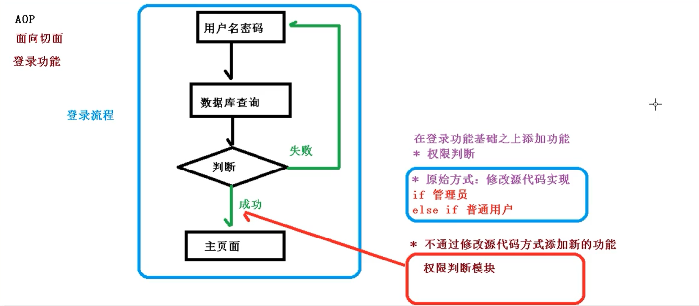

<!DOCTYPE html>


<html lang="zh-Hans">
  

    <head>
      <meta charset="utf-8" />
        
      <meta name="description" content="Technical output and problem solving record" />
      
      <meta
        name="viewport"
        content="width=device-width, initial-scale=1, maximum-scale=1"
      />
      <title>详解Spring中的AOP机制 |  Tunan`s Blog</title>
  <meta name="generator" content="hexo-theme-ayer">
      
      <link rel="shortcut icon" href="/favicon.ico" />
       
<link rel="stylesheet" href="/dist/main.css">

      <link
        rel="stylesheet"
        href="https://cdn.jsdelivr.net/gh/Shen-Yu/cdn/css/remixicon.min.css"
      />
      
<link rel="stylesheet" href="/css/custom.css">
 
      <script src="https://cdn.jsdelivr.net/npm/pace-js@1.0.2/pace.min.js"></script>
       
 

      <link
        rel="stylesheet"
        href="https://cdn.jsdelivr.net/npm/@sweetalert2/theme-bulma@5.0.1/bulma.min.css"
      />
      <script src="https://cdn.jsdelivr.net/npm/sweetalert2@11.0.19/dist/sweetalert2.min.js"></script>

      <!-- mermaid -->
      
      <style>
        .swal2-styled.swal2-confirm {
          font-size: 1.6rem;
        }
      </style>
    </head>
  </html>
</html>


<body>
  <div id="app">
    
      
    <main class="content on">
      <section class="outer">
  <article
  id="post-详解Spring中的AOP机制"
  class="article article-type-post"
  itemscope
  itemprop="blogPost"
  data-scroll-reveal
>
  <div class="article-inner">
    
    <header class="article-header">
       
<h1 class="article-title sea-center" style="border-left:0" itemprop="name">
  详解Spring中的AOP机制
</h1>
 

      
    </header>
     
    <div class="article-meta">
      <a href="/2022/03/18/%E8%AF%A6%E8%A7%A3Spring%E4%B8%AD%E7%9A%84AOP%E6%9C%BA%E5%88%B6/" class="article-date">
  <time datetime="2022-03-18T04:17:12.000Z" itemprop="datePublished">2022-03-18</time>
</a>   
<div class="word_count">
    <span class="post-time">
        <span class="post-meta-item-icon">
            <i class="ri-quill-pen-line"></i>
            <span class="post-meta-item-text"> Word count:</span>
            <span class="post-count">1.7k</span>
        </span>
    </span>

    <span class="post-time">
        &nbsp; | &nbsp;
        <span class="post-meta-item-icon">
            <i class="ri-book-open-line"></i>
            <span class="post-meta-item-text"> Reading time≈</span>
            <span class="post-count">7 min</span>
        </span>
    </span>
</div>
 
    </div>
      
    <div class="tocbot"></div>


  
    <div class="article-entry" itemprop="articleBody">
       
  <h2 id="AOP概念"><a href="#AOP概念" class="headerlink" title="AOP概念"></a>AOP概念</h2><p>AOP：面向切面编程（方面），利用AOP可以对业务逻辑的各个部分进行隔离，从而降低耦合度，提高程序可重用性和开发效率；将日志记录，事务处理，异常处理、性能统计，安全控制等代码从业务逻辑代码中划分出来，改变这些行为的时候不影响业务逻辑代码。</p>
<p>通俗描述：在不修改源代码的情况下，在主干功能里面添加新的功能。</p>
<p></p>
<h2 id="AOP底层原理"><a href="#AOP底层原理" class="headerlink" title="AOP底层原理"></a>AOP底层原理</h2><p>AOP底层使用动态代理</p>
<ul>
<li>第一种 有接口情况，使用JDK动态代理（创建接口实现类代理对象，增强类的方法）</li>
<li>第二种 没有接口情况，使用CGLIB动态代理</li>
</ul>
<h3 id="AOP（JDK动态代理）"><a href="#AOP（JDK动态代理）" class="headerlink" title="AOP（JDK动态代理）"></a>AOP（JDK动态代理）</h3><p>（1）JDK动态代理，使用Proxy类，java.lang.reflect.Proxy代理类。</p>
<p> newProxyInstance(Classloader loader, 类&lt;?&gt;[ ]… interfaaces，InvocationHandler h)</p>
<p> 返回指定接口的代理类实例：（类加载器，增强方法所在的类，这个类实现的接口，支持多个接口，实现这个接口InvocationHandler,创建代理对象，写增强方法）</p>
<p>（2）编写JDK动态代理代码</p>
<pre><code class="java">//（1）创建接口，定义方法
public interface UserDao &#123;
    public int add(int a,int b);
    public String updata(String id);
&#125;

//（2）接口实现类
public class UserDaoImpl implements UserDao&#123;

    @Override
    public int add(int a, int b) &#123;
        System.out.println(&quot;add方法执行了...&quot;);
        return a+b;
    &#125;

    @Override
    public String updata(String id) &#123;
        System.out.println(&quot;updata方法执行了...&quot;);
        return id;
    &#125;
&#125;

//(3)使用proxy类创建接口代理对象
public class JDKProxy &#123;
    public static void main(String[] args) &#123;
        // 创建接口实现类代理对象
        Class[] interfaces = &#123;UserDao.class&#125;;
        UserDao userDao = new UserDaoImpl();
        UserDao dao = (UserDao)Proxy.newProxyInstance(JDKProxy.class.getClassLoader(),interfaces,new UserDaoProxy(userDao));
        int result = dao.add(1,2);
        System.out.println(&quot;result：&quot;+result);
    &#125;
&#125;

class UserDaoProxy implements InvocationHandler&#123;
    // 把创建的谁的代理对象，把谁传递过来
    // 有参构造
    private Object obj;
    public UserDaoProxy(Object obj)&#123;
        this.obj = obj;
    &#125;

    // 增强的逻辑
    @Override
    public Object invoke(Object proxy, Method method, Object[] args) throws Throwable &#123;
        // 方法之前
        System.out.println(&quot;方法之前执行：&quot;+method.getName()+&quot;：传递的参数&quot;+ Arrays.toString(args));

        // 被增强的方法执行
        Object res = method.invoke(obj,args);

        // 方法之后
        System.out.println(&quot;方法之后执行：&quot;+obj);

        return res;
    &#125;
&#125;
</code></pre>
<h2 id="AOP术语"><a href="#AOP术语" class="headerlink" title="AOP术语"></a>AOP术语</h2><p>（1）连接点：类里面可以被增强的方法。</p>
<p>（2）切入点：实际被增强的方法。</p>
<p>（3）通知（增强）：实际增加的逻辑部分。（ 通知有多种类型）</p>
<ul>
<li>前置通知</li>
<li>后置通知</li>
<li>环绕通知</li>
<li>异常通知</li>
<li>最终通知（finally）</li>
</ul>
<p>（4）切面：把通知应用到切入点的过程</p>
<h2 id="AOP操作"><a href="#AOP操作" class="headerlink" title="AOP操作"></a>AOP操作</h2><p>（1）Spring 框架中一般都是基于AspectJ实现AOP操作</p>
<p>AspectJ，本身是单独的框架，不属于Spring组成部分，独立于AOP框架，一般把AspectJ和Spring框架一起使用，进行AOP操作。</p>
<p>（2）基于AspectJ实现AOP操作</p>
<p>基于xml配置文件实现<br>基于注解方式实现<br>（3）项目里引入相关依赖</p>
<p>（4）切入点表达式</p>
<p>切入点表达式作用：知道对哪个类的哪个方法进行增强</p>
<p>语法结构</p>
<p>execution([权限修饰符] [返回类型] [类全路径] [方法名称] ([参数列表]))</p>
<p>举例1：对com.zhh.dao.BookDao类里的add进行增强</p>
<p>execution(* com.zhh.dao.BookDao.add(…))</p>
<p>举例2：对com.zhh.dao.BookDao类里的所有方法进行增强</p>
<p>execution(* com.zhh.dao.BookDao.*(…))</p>
<p>举例3：对com.zhh.dao包里的所有类，类里的所有方法进行增强</p>
<p>execution(* com.zhh.dao..(…))</p>
<h2 id="AOP操作（Aspectj注解）"><a href="#AOP操作（Aspectj注解）" class="headerlink" title="AOP操作（Aspectj注解）"></a>AOP操作（Aspectj注解）</h2><p>（1）创建类、在类里面定义方法</p>
<pre><code class="java">// 待增强类
@Component
public class User &#123;
    public void add()&#123;
        System.out.println(&quot;add.......&quot;);
    &#125;
&#125;
</code></pre>
<p>（2）创建增强类（编写增强逻辑）</p>
<pre><code class="java">// 增强的类
@Component
@Aspect
public class UserProxy &#123;
    // 前置通知
    public void before()&#123;
        System.out.println(&quot;before.....&quot;);
    &#125;
&#125;
</code></pre>
<p>（3）配置XML</p>
<pre><code class="xml">&lt;?xml version=&quot;1.0&quot; encoding=&quot;UTF-8&quot;?&gt;
&lt;beans xmlns=&quot;http://www.springframework.org/schema/beans&quot;
       xmlns:xsi=&quot;http://www.w3.org/2001/XMLSchema-instance&quot;
       xmlns:context=&quot;http://www.springframework.org/schema/context&quot;
       xmlns:aop=&quot;http://www.springframework.org/schema/aop&quot;
       xsi:schemaLocation=&quot;http://www.springframework.org/schema/beans http://www.springframework.org/schema/beans/spring-beans.xsd
                           http://www.springframework.org/schema/context http://www.springframework.org/schema/context/spring-context.xsd
                           http://www.springframework.org/schema/aop http://www.springframework.org/schema/aop/spring-aop.xsd
&quot;&gt;
    &lt;!--开启注释扫描--&gt;
    &lt;context:component-scan base-package=&quot;cn.spring5.Aop.Doem1&quot;&gt;&lt;/context:component-scan&gt;

    &lt;!--开启Aspect生成代理对象--&gt;
    &lt;aop:aspectj-autoproxy&gt;&lt;/aop:aspectj-autoproxy&gt;
&lt;/beans&gt;
</code></pre>
<p>（4）在增强类上面添加注解@Aspect</p>
<p>（5）在spring配置文件中开启生成代理对象</p>
<p>（6）配置不同类型通知</p>
<pre><code class="java">// 增强的类
@Component
@Aspect
public class UserProxy &#123;
    // 前置通知
    @Before(value = &quot;execution(* cn.spring5.Aop.Doem1.User.add(..))&quot;)
    public void before()&#123;
        System.out.println(&quot;前置通知.....&quot;);
    &#125;
    //返回通知，有异常不执行
    @AfterReturning(value=&quot;execution(* cn.spring5.Aop.Doem1.User.add(..))&quot;)
    public void afterReturning()&#123;
        System.out.println(&quot;返回通知...&quot;);
    &#125;
    //后置通知，有没有异常都会执行
    @After(value=&quot;execution(* cn.spring5.Aop.Doem1.User.add(..))&quot;)
    public void after()&#123;
        System.out.println(&quot;后置通知...&quot;);
    &#125;
    //异常通知
    @AfterThrowing(value=&quot;execution(* cn.spring5.Aop.Doem1.User.add(..))&quot;)
    public void AfterTrowing()&#123;
        System.out.println(&quot;异常通知...&quot;);
    &#125;
    //环绕通知,之前，之后都执行
    @Around(value=&quot;execution(* cn.spring5.Aop.Doem1.User.add(..))&quot;)
    public void around(ProceedingJoinPoint proceedingJontPoint) throws  Throwable&#123;
        System.out.println(&quot;环绕通知之前...&quot;);

        // 被增强的方法执行
        proceedingJontPoint.proceed();

        System.out.println(&quot;环绕通知之后...&quot;);
    &#125;
&#125;
</code></pre>
<p>（8）有多个增强类对同一个方法进行增强，设置增强类的优先级,在增强类上面添加注解@Order(数字类型值)，数字类型值越小优先级越高</p>
<pre><code class="java">@Component
@Aspect
@Order(1)
public class PersonProxy&#123;
&#125;
</code></pre>
<p>（9）完全使用注解开发</p>
<pre><code class="java">@Configuration
//开启注释扫描
@ComponentScan(basePackages = &#123;&quot;cn.spring5.Aop&quot;&#125;)
//开启Aspect生成代理对象
@EnableAspectJAutoProxy(proxyTargetClass = true)
public class ConfigAop &#123;
&#125;
</code></pre>
<h2 id="AOP操作（Aspectj配置文件）"><a href="#AOP操作（Aspectj配置文件）" class="headerlink" title="AOP操作（Aspectj配置文件）"></a>AOP操作（Aspectj配置文件）</h2><p>（1）创建两个类，增强类和被增强类，创建方法</p>
<pre><code class="java">
//被增强类
public class Book&#123;
    public void buy()&#123;
        System.out.println(&quot;buy.......&quot;);
    &#125;
&#125;
//增强类
public class BookProxy&#123;
    public void before()&#123;
        System.out.println(&quot;before.......&quot;);
    &#125;
&#125;
</code></pre>
<p>（2）创建对象</p>
<pre><code class="xml">&lt;!--创建对象--&gt;
&lt;bean id=&quot;book&quot; class=&quot;cn.spring5.Aop.aopXml.Book&quot;&gt;&lt;/bean&gt;
&lt;bean id=&quot;bookProxy&quot; class=&quot;cn.spring5.Aop.aopXml.BookProxy&quot;&gt;&lt;/bean&gt;
</code></pre>
<p>（3）在spring配置文件中配置切入点</p>
<pre><code class="xml">&lt;!--AOP增强--&gt;
&lt;aop:config&gt;
    &lt;!--切入点--&gt;
    &lt;aop:pointcut id=&quot;p&quot; expression=&quot;execution(* cn.spring5.Aop.aopXml.Book.buy(..))&quot;/&gt;
    &lt;!--配置切面--&gt;
    &lt;aop:aspect ref=&quot;bookProxy&quot;&gt;
        &lt;!--增强作用在具体的方法上--&gt;
        &lt;aop:before method=&quot;before&quot; pointcut-ref=&quot;p&quot;&gt;&lt;/aop:before&gt;
    &lt;/aop:aspect&gt;
&lt;/aop:config&gt;
</code></pre>
<p>（4）测试</p>
<pre><code class="java">    @Test
    public void TestAop2()&#123;
        ApplicationContext context = new ClassPathXmlApplicationContext(&quot;bean11.xml&quot;);
        Book book = context.getBean(&quot;book&quot;, Book.class);
        book.buy();
    &#125;
</code></pre>
 
      <!-- reward -->
      
    </div>
    

    <!-- copyright -->
    
    <div class="declare">
      <ul class="post-copyright">
        <li>
          <i class="ri-copyright-line"></i>
          <strong>Copyright： </strong>
          
          Copyright is owned by the author. For commercial reprints, please contact the author for authorization. For non-commercial reprints, please indicate the source.
          
        </li>
      </ul>
    </div>
    
    <footer class="article-footer">
       
<div class="share-btn">
      <span class="share-sns share-outer">
        <i class="ri-share-forward-line"></i>
        分享
      </span>
      <div class="share-wrap">
        <i class="arrow"></i>
        <div class="share-icons">
          
          <a class="weibo share-sns" href="javascript:;" data-type="weibo">
            <i class="ri-weibo-fill"></i>
          </a>
          <a class="weixin share-sns wxFab" href="javascript:;" data-type="weixin">
            <i class="ri-wechat-fill"></i>
          </a>
          <a class="qq share-sns" href="javascript:;" data-type="qq">
            <i class="ri-qq-fill"></i>
          </a>
          <a class="douban share-sns" href="javascript:;" data-type="douban">
            <i class="ri-douban-line"></i>
          </a>
          <!-- <a class="qzone share-sns" href="javascript:;" data-type="qzone">
            <i class="icon icon-qzone"></i>
          </a> -->
          
          <a class="facebook share-sns" href="javascript:;" data-type="facebook">
            <i class="ri-facebook-circle-fill"></i>
          </a>
          <a class="twitter share-sns" href="javascript:;" data-type="twitter">
            <i class="ri-twitter-fill"></i>
          </a>
          <a class="google share-sns" href="javascript:;" data-type="google">
            <i class="ri-google-fill"></i>
          </a>
        </div>
      </div>
</div>

<div class="wx-share-modal">
    <a class="modal-close" href="javascript:;"><i class="ri-close-circle-line"></i></a>
    <p>扫一扫，分享到微信</p>
    <div class="wx-qrcode">
      
    </div>
</div>

<div id="share-mask"></div>  
    </footer>
  </div>

   
  <nav class="article-nav">
    
    
      <a href="/2022/03/17/%E8%AF%A6%E8%A7%A3Spring%E4%B8%AD%E7%9A%84IOC%E5%AE%B9%E5%99%A8/" class="article-nav-link">
        <strong class="article-nav-caption">下一篇</strong>
        <div class="article-nav-title">详解Spring中的IOC容器</div>
      </a>
    
  </nav>

   
<!-- valine评论 -->
<div id="vcomments-box">
  <div id="vcomments"></div>
</div>
<script src="//cdn1.lncld.net/static/js/3.0.4/av-min.js"></script>
<script src="https://cdn.jsdelivr.net/npm/valine@1.4.14/dist/Valine.min.js"></script>
<script>
  new Valine({
    el: "#vcomments",
    app_id: "",
    app_key: "",
    path: window.location.pathname,
    avatar: "monsterid",
    placeholder: "给我的文章加点评论吧~",
    recordIP: true,
  });
  const infoEle = document.querySelector("#vcomments .info");
  if (infoEle && infoEle.childNodes && infoEle.childNodes.length > 0) {
    infoEle.childNodes.forEach(function (item) {
      item.parentNode.removeChild(item);
    });
  }
</script>
<style>
  #vcomments-box {
    padding: 5px 30px;
  }

  @media screen and (max-width: 800px) {
    #vcomments-box {
      padding: 5px 0px;
    }
  }

  #vcomments-box #vcomments {
    background-color: #fff;
  }

  .v .vlist .vcard .vh {
    padding-right: 20px;
  }

  .v .vlist .vcard {
    padding-left: 10px;
  }
</style>

 
   
     
</article>

</section>
      <footer class="footer">
  <div class="outer">
    <ul>
      <li>
        Copyrights &copy;
        2018-2022
        <i class="ri-heart-fill heart_icon"></i> Tunan
      </li>
    </ul>
    <ul>
      <li>
        
      </li>
    </ul>
    <ul>
      <li>
        
        
        <span>
  <span><i class="ri-user-3-fill"></i>Visitors:<span id="busuanzi_value_site_uv"></span></span>
  <span class="division">|</span>
  <span><i class="ri-eye-fill"></i>Views:<span id="busuanzi_value_page_pv"></span></span>
</span>
        
      </li>
    </ul>
    <ul>
      
    </ul>
    <ul>
      
    </ul>
    <ul>
      <li>
        <!-- cnzz统计 -->
        
        <script type="text/javascript" src='https://s9.cnzz.com/z_stat.php?id=1278069914&amp;web_id=1278069914'></script>
        
      </li>
    </ul>
  </div>
</footer>    
    </main>
    <div class="float_btns">
      <div class="totop" id="totop">
  <i class="ri-arrow-up-line"></i>
</div>

<div class="todark" id="todark">
  <i class="ri-moon-line"></i>
</div>

    </div>
    <aside class="sidebar on">
      <button class="navbar-toggle"></button>
<nav class="navbar">
  
  <div class="logo">
    <a href="/"></a>
  </div>
  
  <ul class="nav nav-main">
    
    <li class="nav-item">
      <a class="nav-item-link" href="/">主页</a>
    </li>
    
    <li class="nav-item">
      <a class="nav-item-link" href="/archives">归档</a>
    </li>
    
    <li class="nav-item">
      <a class="nav-item-link" href="/categories">分类</a>
    </li>
    
    <li class="nav-item">
      <a class="nav-item-link" href="/tags">标签</a>
    </li>
    
    <li class="nav-item">
      <a class="nav-item-link" href="/tags/share">分享</a>
    </li>
    
    <li class="nav-item">
      <a class="nav-item-link" target="_blank" rel="noopener" href="https://blog.csdn.net/North_City_">CSDN</a>
    </li>
    
  </ul>
</nav>
<nav class="navbar navbar-bottom">
  <ul class="nav">
    <li class="nav-item">
      
      <a class="nav-item-link nav-item-search"  title="Search">
        <i class="ri-search-line"></i>
      </a>
      
      
      <a class="nav-item-link" target="_blank" href="/atom.xml" title="RSS Feed">
        <i class="ri-rss-line"></i>
      </a>
      
    </li>
  </ul>
</nav>
<div class="search-form-wrap">
  <div class="local-search local-search-plugin">
  <input type="search" id="local-search-input" class="local-search-input" placeholder="Search...">
  <div id="local-search-result" class="local-search-result"></div>
</div>
</div>
    </aside>
    <div id="mask"></div>

<!-- #reward -->
<div id="reward">
  <span class="close"><i class="ri-close-line"></i></span>
  <p class="reward-p"><i class="ri-cup-line"></i>请我喝杯咖啡吧~</p>
  <div class="reward-box">
    
    <div class="reward-item">
      
      <span class="reward-type">支付宝</span>
    </div>
    
    
    <div class="reward-item">
      
      <span class="reward-type">微信</span>
    </div>
    
  </div>
</div>
    
<script src="/js/jquery-3.6.0.min.js"></script>
 
<script src="/js/lazyload.min.js"></script>

<!-- Tocbot -->
 
<script src="/js/tocbot.min.js"></script>

<script>
  tocbot.init({
    tocSelector: ".tocbot",
    contentSelector: ".article-entry",
    headingSelector: "h1, h2, h3, h4, h5, h6",
    hasInnerContainers: true,
    scrollSmooth: true,
    scrollContainer: "main",
    positionFixedSelector: ".tocbot",
    positionFixedClass: "is-position-fixed",
    fixedSidebarOffset: "auto",
  });
</script>

<script src="https://cdn.jsdelivr.net/npm/jquery-modal@0.9.2/jquery.modal.min.js"></script>
<link
  rel="stylesheet"
  href="https://cdn.jsdelivr.net/npm/jquery-modal@0.9.2/jquery.modal.min.css"
/>
<script src="https://cdn.jsdelivr.net/npm/justifiedGallery@3.7.0/dist/js/jquery.justifiedGallery.min.js"></script>

<script src="/dist/main.js"></script>

<!-- ImageViewer -->
 <!-- Root element of PhotoSwipe. Must have class pswp. -->
<div class="pswp" tabindex="-1" role="dialog" aria-hidden="true">

    <!-- Background of PhotoSwipe. 
         It's a separate element as animating opacity is faster than rgba(). -->
    <div class="pswp__bg"></div>

    <!-- Slides wrapper with overflow:hidden. -->
    <div class="pswp__scroll-wrap">

        <!-- Container that holds slides. 
            PhotoSwipe keeps only 3 of them in the DOM to save memory.
            Don't modify these 3 pswp__item elements, data is added later on. -->
        <div class="pswp__container">
            <div class="pswp__item"></div>
            <div class="pswp__item"></div>
            <div class="pswp__item"></div>
        </div>

        <!-- Default (PhotoSwipeUI_Default) interface on top of sliding area. Can be changed. -->
        <div class="pswp__ui pswp__ui--hidden">

            <div class="pswp__top-bar">

                <!--  Controls are self-explanatory. Order can be changed. -->

                <div class="pswp__counter"></div>

                <button class="pswp__button pswp__button--close" title="Close (Esc)"></button>

                <button class="pswp__button pswp__button--share" style="display:none" title="Share"></button>

                <button class="pswp__button pswp__button--fs" title="Toggle fullscreen"></button>

                <button class="pswp__button pswp__button--zoom" title="Zoom in/out"></button>

                <!-- Preloader demo http://codepen.io/dimsemenov/pen/yyBWoR -->
                <!-- element will get class pswp__preloader--active when preloader is running -->
                <div class="pswp__preloader">
                    <div class="pswp__preloader__icn">
                        <div class="pswp__preloader__cut">
                            <div class="pswp__preloader__donut"></div>
                        </div>
                    </div>
                </div>
            </div>

            <div class="pswp__share-modal pswp__share-modal--hidden pswp__single-tap">
                <div class="pswp__share-tooltip"></div>
            </div>

            <button class="pswp__button pswp__button--arrow--left" title="Previous (arrow left)">
            </button>

            <button class="pswp__button pswp__button--arrow--right" title="Next (arrow right)">
            </button>

            <div class="pswp__caption">
                <div class="pswp__caption__center"></div>
            </div>

        </div>

    </div>

</div>

<link rel="stylesheet" href="https://cdn.jsdelivr.net/npm/photoswipe@4.1.3/dist/photoswipe.min.css">
<link rel="stylesheet" href="https://cdn.jsdelivr.net/npm/photoswipe@4.1.3/dist/default-skin/default-skin.min.css">
<script src="https://cdn.jsdelivr.net/npm/photoswipe@4.1.3/dist/photoswipe.min.js"></script>
<script src="https://cdn.jsdelivr.net/npm/photoswipe@4.1.3/dist/photoswipe-ui-default.min.js"></script>

<script>
    function viewer_init() {
        let pswpElement = document.querySelectorAll('.pswp')[0];
        let $imgArr = document.querySelectorAll(('.article-entry img:not(.reward-img)'))

        $imgArr.forEach(($em, i) => {
            $em.onclick = () => {
                // slider展开状态
                // todo: 这样不好，后面改成状态
                if (document.querySelector('.left-col.show')) return
                let items = []
                $imgArr.forEach(($em2, i2) => {
                    let img = $em2.getAttribute('data-idx', i2)
                    let src = $em2.getAttribute('data-target') || $em2.getAttribute('src')
                    let title = $em2.getAttribute('alt')
                    // 获得原图尺寸
                    const image = new Image()
                    image.src = src
                    items.push({
                        src: src,
                        w: image.width || $em2.width,
                        h: image.height || $em2.height,
                        title: title
                    })
                })
                var gallery = new PhotoSwipe(pswpElement, PhotoSwipeUI_Default, items, {
                    index: parseInt(i)
                });
                gallery.init()
            }
        })
    }
    viewer_init()
</script> 
<!-- MathJax -->

<!-- Katex -->

<!-- busuanzi  -->
 
<script src="/js/busuanzi-2.3.pure.min.js"></script>
 
<!-- ClickLove -->

<!-- ClickBoom1 -->

<!-- ClickBoom2 -->

<!-- CodeCopy -->
 
<link rel="stylesheet" href="/css/clipboard.css">
 <script src="https://cdn.jsdelivr.net/npm/clipboard@2/dist/clipboard.min.js"></script>
<script>
  function wait(callback, seconds) {
    var timelag = null;
    timelag = window.setTimeout(callback, seconds);
  }
  !function (e, t, a) {
    var initCopyCode = function(){
      var copyHtml = '';
      copyHtml += '<button class="btn-copy" data-clipboard-snippet="">';
      copyHtml += '<i class="ri-file-copy-2-line"></i><span>COPY</span>';
      copyHtml += '</button>';
      $(".highlight .code pre").before(copyHtml);
      $(".article pre code").before(copyHtml);
      var clipboard = new ClipboardJS('.btn-copy', {
        target: function(trigger) {
          return trigger.nextElementSibling;
        }
      });
      clipboard.on('success', function(e) {
        let $btn = $(e.trigger);
        $btn.addClass('copied');
        let $icon = $($btn.find('i'));
        $icon.removeClass('ri-file-copy-2-line');
        $icon.addClass('ri-checkbox-circle-line');
        let $span = $($btn.find('span'));
        $span[0].innerText = 'COPIED';
        
        wait(function () { // 等待两秒钟后恢复
          $icon.removeClass('ri-checkbox-circle-line');
          $icon.addClass('ri-file-copy-2-line');
          $span[0].innerText = 'COPY';
        }, 2000);
      });
      clipboard.on('error', function(e) {
        e.clearSelection();
        let $btn = $(e.trigger);
        $btn.addClass('copy-failed');
        let $icon = $($btn.find('i'));
        $icon.removeClass('ri-file-copy-2-line');
        $icon.addClass('ri-time-line');
        let $span = $($btn.find('span'));
        $span[0].innerText = 'COPY FAILED';
        
        wait(function () { // 等待两秒钟后恢复
          $icon.removeClass('ri-time-line');
          $icon.addClass('ri-file-copy-2-line');
          $span[0].innerText = 'COPY';
        }, 2000);
      });
    }
    initCopyCode();
  }(window, document);
</script>
 
<!-- CanvasBackground -->

<script>
  if (window.mermaid) {
    mermaid.initialize({ theme: "forest" });
  }
</script>


    
    

  </div>
</body>

</html>